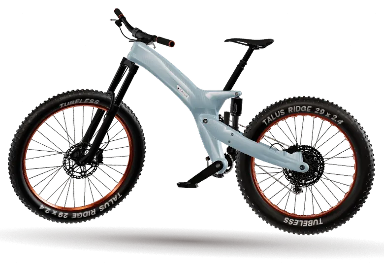
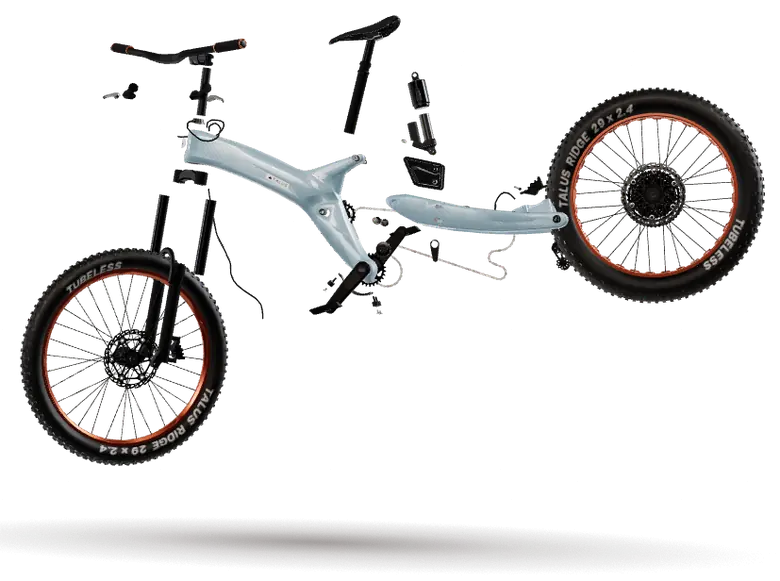
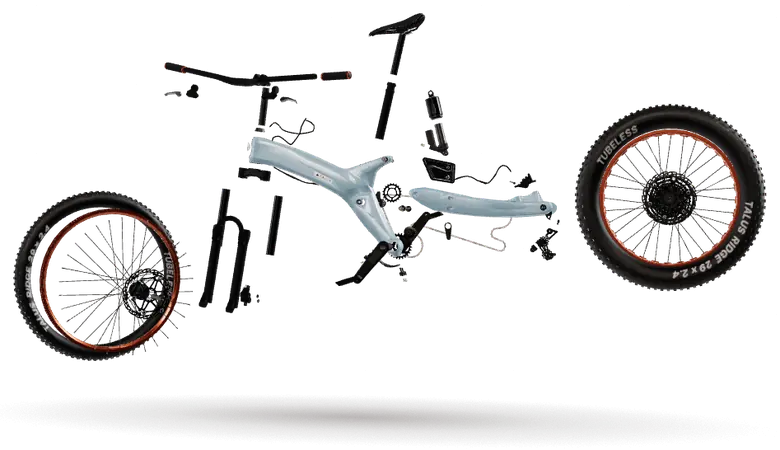

Ridge C1 · carbon trail
RIDGE

A trail bike drawn around one idea: every part you can see is a part you can reach with a 5 mm key.
01
One frame.
Every part.
Slide to take the C1 down the way a mechanic would.


- Assembled
- Wheels and cockpit off
- Bare frame
02
Glacier
Cold blue-grey under four coats of clear. Looks wet at the trailhead, looks wet after it.
03
The numbers we would hold it to.
Design targets for a fictional bike. Nothing here has been built or tested.
- Travel
- 0mm front
- Head angle
- 0deg
- Gears
- 0speed
- Frame target
- 0kg
130 mm rear on a single-pivot linkage that keeps the shock out of the mud line.
Slack enough to stay calm when the trail tips, steep enough to climb back up it.
One ring up front, 10 to 52 out back. No front mech, nothing to tune.
Size M with hardware, paint and the stealth dropper routing included.
04
Last light is
still riding light.
Flip the studio off. The lacquer picks up the low sun and the logo on the sidewall gets its moment.
Ride the
drawing.
TALUS is a concept by Zyqor Studio. There is no bike to buy and no shop behind this button.
Book a test ride